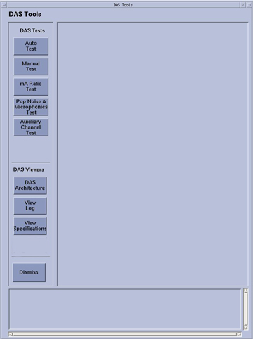

Operating Documentation
Direction 5193574-800, Rev# 22
LightSpeed 7.X Service Methods
Module Version 2.0, Version Date 4/21/09
Operating Documentation |
| Last Revised: | February 9, 2009 |
DASTool is both a tool and diagnostic used to test or exercise most or all functions of the DAS, to verify the performance in both a manufacturing and field service environment. There are several sub-tests within DASTools that are specifically used during system install/integration, while other tests are used for diagnostic purposes. There is also a section called “viewers,” which allows the user to view the DAS architecture relative to DAS to Detector channel mapping, View error log, and view the test specification limits for each test.
Illustration 1: Example Main DASTools Menu

Illustration 1 shows an example of the top level menu for DASTools. Button names may change slightly or not exist with different software releases or hardware configurations. Access is through a Graphical User Interface (GUI) from the Service Desktop.
For most of the scanning in DASTools, DDC protocols are used, and the scan data is stored in standard scan data files that can be used for further review in Scan Analysis. During the scanning portion of the test, the exam, series, and scan number are displayed on the screen, as well as in the error log, if the analyzed scan data falls outside the expected values.